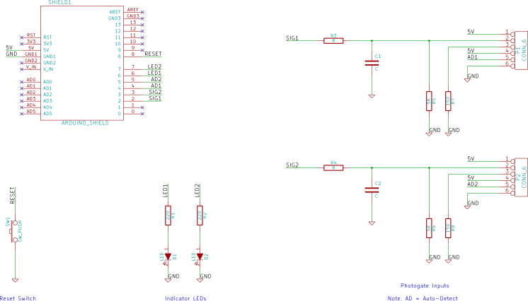
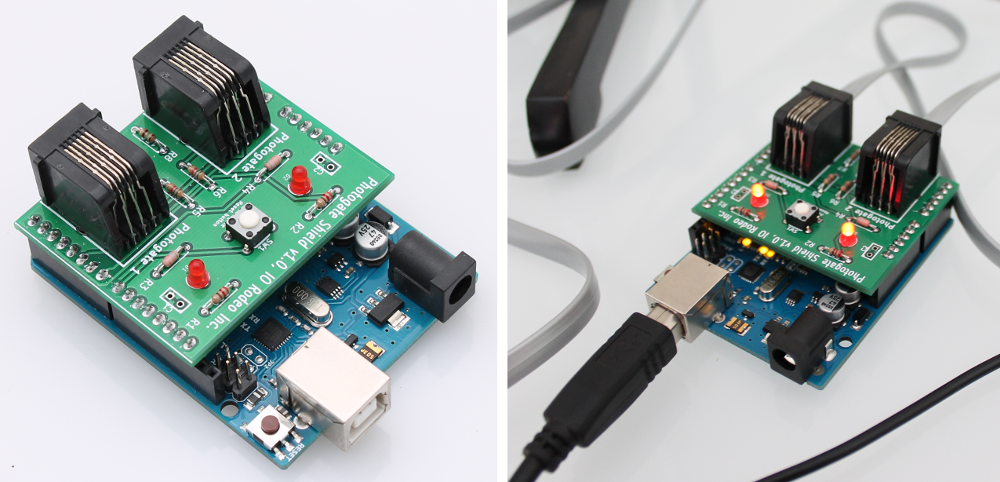

Photogate shield for Arduino¶
KiCad design files and Gerber files for the PCB can be downloaded from the project page at https://bitbucket.org/iorodeo/photogate_shield.

Shield Images¶

Shield BOM¶
| Ref | Qty | Description | Vendor | Part # |
|---|---|---|---|---|
| 1 | Photogate shield board v1.1 | IO Rodeo | ||
| D1,2 | 2 | Red LED | Jameco | 202471 |
| P1,2 | 2 | RJ11 jack | Digikey | A31406-ND |
| SW1 | 1 | Reset button | Digikey | P8006S-ND |
| R1,2 | 2 | 220 Ohm resistor, 1/8W | Digikey | CF18JT220RCT-ND |
| R3,4,5,6 | 4 | 5.6 K Ohm resistor, 1/8W | Digikey | CF18JT5K60CT-ND |
| R7, R8 | 2 | 150 Ohm resistor, 1/8W | Digikey | CF18JT150RCT-ND |
| 1 | Breakaway header, 40pos | Digikey | A32701-40-ND |
Programming Arduino with photogate firmware¶
Note: If you received a pre-programmed Arduino with your photogate kit you can skip this section.
To build the photogate firmware you will also need the Arduino Streaming library [1].
- Download the Arduino photogate firmware from https://bitbucket.org/iorodeo/photogate_software/get/default.zip
- Unzip the .zip archive. The firmware is located in the firmware subfolder
- Connect your Arduino board. Launch the Arduino IDE [2] and open the main firmware file “firmware.ino”
- Select the Arduino Uno board model
- Select the serial port it is using – under “Tools” menu of the Arduino IDE
- Upload the photogate firmware to the Arduino board.
Footnotes
| [1] | Arduino streaming library download: http://arduiniana.org/libraries/streaming/. Instructions for installing Arduino libraries can be found here: http://arduino.cc/en/Guide/Libraries |
| [2] | Arduino IDE installation instructions available at http://arduino.cc/en/Guide/HomePage. More detailed instructions for using the Arduino IDE can be found at http://arduino.cc/en/Guide/Environment |